1. Schnellstart#
| Dein Vorhaben | Einstieg | Ergebnis |
|---|---|---|
| Einen neuen Einsatz vorbereiten | Einsatzbereich → Heute planen → Teamkarte | Eine neue Vorbereitung |
| Eine vorhandene Vorbereitung fortsetzen | Offene Einsätze → Eintrag → Vorbereitung bearbeiten | Derselbe Einsatz wird bearbeitet |
| Nach dem Einsatz dokumentieren | Offene Einsätze → Eintrag → Protokoll ausfüllen | Entwurf oder abgeschlossenes Protokoll |
| Ein fertiges Protokoll nachlesen | Protokolle → Eintrag | Protokolldetail mit Ergebnis |
| Einen Ausfall dokumentieren | Vorbereitung → Einsatz ausgefallen? → Ausfallgrund → Speichern | Abgeschlossener Ausfall, wenn vollständig |
| Ein Thema aus dem Einsatz mitnehmen | Einsatz/Protokoll → Neue Nachverfolgung | Aufgabe mit festem Einsatzbezug |
| Ein allgemeines Thema erfassen | Nachverfolgung → Hinzufügen | Aufgabe ohne Einsatzbezug |
| Einen gelöschten Eintrag zurückholen | Menü → Papierkorb → Eintrag → Wiederherstellen | Wieder verfügbar; Hauptamtlich/Admin |
| Zahlen für einen Zeitraum ansehen | Menü → Statistik → Zeitraum ändern → Unterkunft | Unterkunftsauswertung; Hauptamtlich/Admin |
| Eine Excel-Datei erhalten | Statistik → Unterkunft → Excel per Mail | Mail mit XLSX an dein angemeldetes Konto |
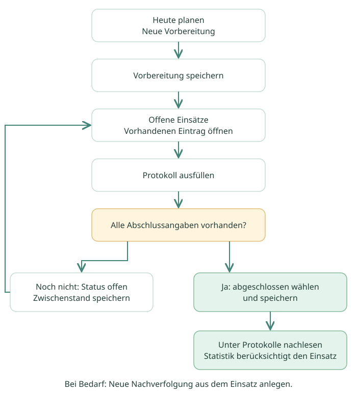
Merke: Für einen bereits angelegten Einsatz immer den vorhandenen Eintrag öffnen. Ein neuer Aufruf von Heute planen kann einen weiteren Einsatz erzeugen. Mehrere Einsätze am gleichen Tag werden nicht automatisch als Duplikate erkannt.
Zurück zum Überblick ↑2. Anmeldung und Zusammenarbeit#
- Öffne den von der Verwaltung bereitgestellten Link zur ReflexionsApp.
- Melde dich mit genau dem Google-Konto an, das dafür freigegeben wurde.
- Lass die App synchronisieren, damit Teamzuordnung und Daten aktuell sind.
- Prüfe bei der ersten Benutzung, ob du die erwarteten Teamdaten siehst. Melde fehlende oder fremde Inhalte der Verwaltung.
Ein App-Link allein reicht nicht aus: Die Verwaltung muss das Konto freigeben und deinem Team zuordnen. Für die Statistik bereitet sie zusätzlich deinen persönlichen Filter vor. Du brauchst dafür keinen direkten Zugriff auf die zugrunde liegende Google-Tabelle.
Sprich im Team ab, wer ein Protokoll gerade bearbeitet. Gleichzeitige Änderungen am selben Eintrag können sich gegenseitig überschreiben. Ein gemeinsames Teamkonto zeigt als Ersteller die Kontoidentität; es kann verschiedene tatsächlich handelnde Personen nicht unterscheiden. Trage den Namen der ausfüllenden Person deshalb sorgfältig ein.
Speichern und Synchronisieren: Die Formulare werden über Speichern abgeschlossen. Ein offener Zwischenstand ist zulässig. Kontrolliere nach dem Speichern, ob der Eintrag im erwarteten Bereich erscheint und die Synchronisierung beendet ist. Bei Verbindungsproblemen nicht vorschnell denselben Einsatz neu anlegen. Ein vollständig getesteter Offlinebetrieb ist in den Unterlagen nicht belegt.
Zurück zum Überblick ↑3. Orientierung#
Abbildung zum Arbeitsschritt Bildplatzhalter
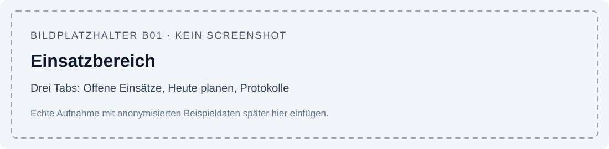
Hier wird später eine echte App-Aufnahme ergänzt. Die Schritte sind vollständig im Text beschrieben.
Der Einsatzbereich bündelt drei Tabs:
| Bereich | Was du dort findest |
|---|---|
| Offene Einsätze | Bereits gespeicherte Vorbereitungen und noch nicht abgeschlossene Protokolle |
| Heute planen | Tageskarten zum Anlegen einer neuen Vorbereitung; bei fehlendem Tagesplan eine Ersatzkarte |
| Protokolle | Abgeschlossene durchgeführte und ausgefallene Einsätze |
Der zweite Hauptbereich Nachverfolgung zeigt offene Themen sowie eine Liste aller nicht gelöschten Themen einschließlich erledigter Einträge. Die offenen Themen sind nach Unterkunft gruppiert. Innerhalb der Gruppen stehen zunächst die neueren Erstellungszeitpunkte; die Liste ist keine automatische Sortierung „älteste Aufgabe zuerst“.
Im Menü liegen für Hauptamtliche und Admins Papierkorb und Statistik. Auf dem Smartphone erscheinen Bereiche und Tabs anders angeordnet als auf einem großen Bildschirm. Maßgeblich sind die Beschriftungen, nicht eine feste Bildschirmposition.
Wer sieht welche Funktionen?
| Funktion im normalen Bedienweg | Helfer | Hauptamtlich | Admin |
|---|---|---|---|
| Vorbereiten, protokollieren, Nachverfolgungen | Eigenes Team | Eigenes Team | Teamübergreifend |
| In Papierkorb verschieben | Im Teamworkflow möglich | Möglich | Möglich |
| Papierkorb im Menü und Wiederherstellen | Nicht angeboten | Eigenes Team | Teamübergreifend |
| Statistik im Menü und regulärer Exportweg | Nicht angeboten | Eigenes Team | Teamwahl in der Statistik |
Diese Tabelle beschreibt die Bedienoberfläche. Eine besondere Vertraulichkeitsstufe für einzelne Nachverfolgungen gibt es im aktuellen Stand nicht. Halte dich beim Eintragen sensibler Inhalte an eure internen Vorgaben.
Zurück zum Überblick ↑4. Einsatz vorbereiten#
4.1 Neue Vorbereitung anlegen
- Öffne Heute planen.
- Wähle die passende Teamkarte und Vorbereitung Anlegen.
- Prüfe Datum, Team und Unterkunft. Bei einem regulären Tagesplan wird die Unterkunft vorgeschlagen.
- Gibt es heute keinen Tagesplan, wähle auf der Ersatzkarte die aktive Unterkunft deines Teams selbst.
- Wähle die Einsatzart Vor Ort, Ausflug oder Fest. Bei Ausflug gehört das Ausflugsziel dazu.
- Prüfe den vorbelegten Planungsbeginn und ergänze deine Planung.
- Erfasse das Personal im eingebetteten Personalbereich. Name und Personalart müssen ausgefüllt sein. Zur Auswahl stehen Hauptamtlich und Honorarkraft; weitere Kategorien sind nicht dokumentiert.
- Lies die offenen Nachverfolgungen der Unterkunft und berücksichtige sie bei der Planung.
- Speichere die Vorbereitung.
Abbildung zum Arbeitsschritt Bildplatzhalter
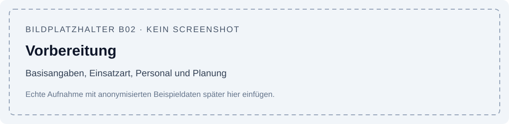
Hier wird später eine echte App-Aufnahme ergänzt. Die Schritte sind vollständig im Text beschrieben.
Erwartetes Ergebnis: Der Einsatz steht unter Offene Einsätze. Vorbereitung und späteres Protokoll gehören zu demselben Eintrag. Noch fehlende Reflexionen oder Kinderzahlen verhindern nicht grundsätzlich das Speichern einer Vorbereitung.
Der Planungsbeginn wird beim Anlegen vorbelegt. Er ist keine automatisch ermittelte tatsächliche Arbeitszeit. Prüfe den Wert, statt ihn ungeprüft zu übernehmen. Für Personalstunden ist im aktuellen Konfigurationsexport keine automatische Stundenberechnung belegt; verlasse dich nicht auf eine solche Vorbelegung.
4.2 Vorhandene Vorbereitung ändern
Öffne unter Offene Einsätze den richtigen Eintrag anhand Datum und Unterkunft. Wähle Vorbereitung bearbeiten, ändere die Angaben und speichere. Nutze Heute planen für einen neuen Einsatz, nicht zum Fortsetzen einer vorhandenen Vorbereitung.
Fehlt die Tageskarte ganz, kann die Stammdatenpflege unvollständig sein. Die Verwaltung pflegt für jedes Team eine Ersatzkarte für Tage ohne Standardplan. Ein fehlender Plan bedeutet nicht automatisch, dass an diesem Tag kein Einsatz angelegt werden darf.
Zurück zum Überblick ↑5. Protokoll ausfüllen und abschließen#
5.1 Zwischenstand speichern
- Öffne den Einsatz unter Offene Einsätze.
- Wähle Protokoll ausfüllen.
- Ergänze die tatsächlichen Zeiten, Reflexionen und Kinderzahlen.
- Fehlen noch Angaben, lass den Protokollstatus offen und speichere.
- Setze die Bearbeitung später über denselben Einsatz fort.
Abbildung zum Arbeitsschritt Bildplatzhalter
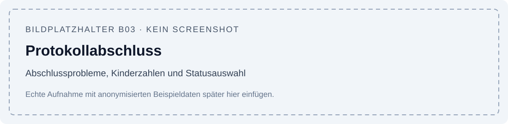
Hier wird später eine echte App-Aufnahme ergänzt. Die Schritte sind vollständig im Text beschrieben.
Im Formular steht bei fehlenden Abschlussangaben der Hinweis Für den Abschluss fehlt noch:. Er ist eine Arbeitsliste: Du kannst damit nach und nach die fehlenden Angaben ergänzen. Zum endgültigen Abschluss müssen alle dort aufgeführten Probleme beseitigt sein.
5.2 Welche Angaben braucht ein durchgeführter Einsatz?
| Gruppe | Für den Abschluss erforderlich |
|---|---|
| Basis | Team, Datum, Unterkunft, Einsatzart; bei Ausflug zusätzlich Ausflugsziel |
| Zeiten | Planungsbeginn, Beginn vor Ort, Ende vor Ort, Ende der Nachbereitung in dieser Reihenfolge |
| Personal | Mindestens eine Person; jede Personalzeile mit Name und Personalart |
| Dokumentation | Name des Ausfüllenden, Ablauf, Partizipation, Wetter und Stimmung |
| Kinderzahlen | Alle acht Alters-/Geschlechtsfelder ausgefüllt und nicht negativ |
Die Zeitangaben sind Uhrzeiten. Ein Ablauf über Mitternacht ist für diese Version nicht als unterstützter Sonderfall ausgearbeitet. Wenn ihr solche Einsätze habt, klärt die Dokumentation mit der Verwaltung, statt eine unplausible Reihenfolge einzutragen.
Weitere Reflexionsfelder wie Erfolge, Probleme, Verbesserungsvorschläge, Eltern, Kindeswohl, Gruppendynamik, Teamzusammenarbeit, Wünsche/Beschlüsse und Sonstiges können fachlich hilfreich sein; sie sind nicht alle Bestandteil der technischen Abschlussprüfung.
5.3 Kinderzahlen richtig eintragen
Erfasst werden vier Gruppen, jeweils weiblich und männlich: 3–5, 6–10, 11–14 und Jugendliche. Eine zusätzliche obere Altersgrenze für Jugendliche ist in den Unterlagen nicht festgelegt.
Trage ganze, nicht negative Zahlen ein. 0 bedeutet: In dieser Gruppe gab es keinen Kontakt. Ein leerer Wert ist keine gleichwertige Angabe. Die Felder starten mit 0; kontrolliere deshalb alle acht Werte bewusst.
Beispiel in Formularreihenfolge: 6, 3, 5, 5, 5, 3, 1, 2 ergibt 17 weibliche, 13 männliche, insgesamt 30 Kinderkontakte. Wiederholte Besuche derselben Kinder bei verschiedenen Einsätzen werden erneut als Kontakte gezählt. Die Summe beschreibt keine Anzahl eindeutig verschiedener Kinder.
5.4 Abschließen und später korrigieren
- Prüfe die Abschlussliste und beseitige alle fehlenden Angaben.
- Wähle Protokollstatus abgeschlossen.
- Speichere das Formular.
- Der Einsatz steht jetzt unter Protokolle und wird in passenden Auswertungen berücksichtigt.
Scheitert der Abschluss, kannst du mit Status offen einen Zwischenstand speichern. Speichern allein schließt ein reguläres Protokoll nicht automatisch ab.
Für eine sachliche Korrektur öffnest du das fertige Protokoll und wählst Protokoll bearbeiten. Ein normales abgeschlossenes Protokoll wird dabei nicht einfach über die Statusauswahl wieder geöffnet. Nach Änderungen an Datum, Zahlen oder Einsatzart kann sich eine spätere Statistik ändern. Bereits versendete Excel-Dateien werden nicht nachträglich aktualisiert.
Zurück zum Überblick ↑6. Ausfälle dokumentieren und zurücknehmen#
6.1 Neuer oder bereits geplanter Einsatz fällt aus
- Lege eine Vorbereitung an oder öffne die bestehende über Vorbereitung bearbeiten.
- Stelle Einsatz ausgefallen? auf Ausgefallen.
- Trage einen verständlichen Ausfallgrund ein. Nur Leerzeichen reichen nicht.
- Prüfe Team, Datum, Unterkunft und Einsatzart.
- Speichere. Sind diese Angaben vollständig, wird der Ausfall automatisch abgeschlossen.
Abbildung zum Arbeitsschritt Bildplatzhalter
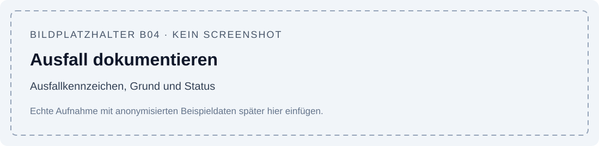
Hier wird später eine echte App-Aufnahme ergänzt. Die Schritte sind vollständig im Text beschrieben.
Ein Ausfall benötigt keine erfundenen Kinderzahlen, Vor-Ort-Zeiten oder Reflexionsangaben. Bereits vorhandene Planung und Personal bleiben erhalten. Auch bei einem neu angelegten Ausfall kann ein Planungsbeginn vorbelegt sein.
Unter Protokolle erkennst du das Ergebnis Ausgefallen und den Grund. Ausfälle zählen getrennt von durchgeführten Einsätzen. Die Excel-Datei enthält die Anzahl der Ausfälle; sie liefert keine Einzelspalte mit jedem Ausfallgrund.
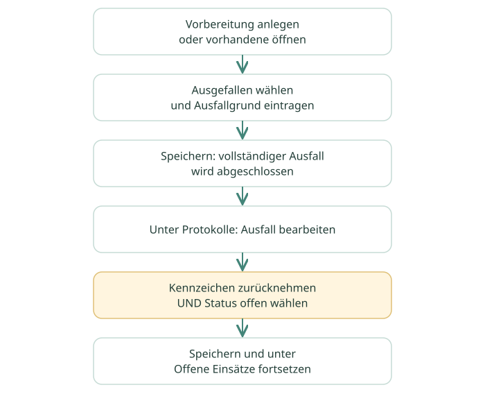
6.2 Ausfall zurücknehmen
Öffne den Ausfall unter Protokolle, wähle Ausfall bearbeiten, stelle das Kennzeichen auf Findet statt und zugleich den Protokollstatus auf offen. Speichere anschließend. Danach kannst du den Einsatz regulär fortsetzen.
Wenn du nur das Ausfallkennzeichen zurücknimmst, aber den Status abgeschlossen lässt, verlangt die App sofort sämtliche Abschlussangaben eines durchgeführten Einsatzes. Diese Blockade vermeidest du durch die zusätzliche Statusänderung auf offen. Einen eigenen Reaktivieren-Button gibt es nicht.
Zurück zum Überblick ↑7. Nachverfolgungen bearbeiten#
Nachverfolgungen halten Themen fest, die nach einem Einsatz weiter bearbeitet werden müssen. Sie haben einen eigenen Bearbeitungsstatus und können länger bestehen als das Einsatzprotokoll.
7.1 Aus einem Einsatz oder Protokoll anlegen
- Öffne den betreffenden Einsatz oder das bereits abgeschlossene Protokoll.
- Wähle Neue Nachverfolgung.
- Team und Unterkunft werden aus dem Einsatz übernommen und sind hier fest zugeordnet.
- Trage ein kurzes Thema, die Beschreibung, Priorität, verantwortliche Person und gegebenenfalls Fälligkeit ein.
- Speichere. Der Startstatus ist offen.
Abbildung zum Arbeitsschritt Bildplatzhalter
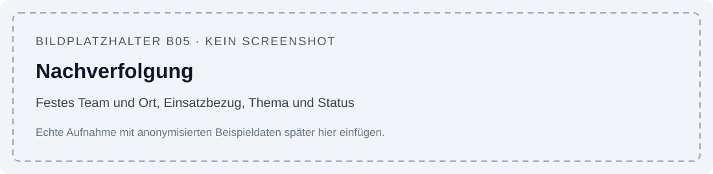
Hier wird später eine echte App-Aufnahme ergänzt. Die Schritte sind vollständig im Text beschrieben.
Über Zum Einsatz gelangst du später zum Ursprung zurück. Ist der Ursprung gelöscht oder nicht verfügbar, zeigt die App einen entsprechenden Hinweis an.
7.2 Ohne Einsatzbezug anlegen
Öffne die offenen Nachverfolgungen und nutze den Hinzufügen-Einstieg. Wähle eine aktive Unterkunft deines Teams und erfasse das Thema. Admins können ohne Einsatzbezug auch das Team auswählen. Dieser Eintrag erhält keinen Ursprungseinsatz. Eine nachträgliche freie Einsatzauswahl im allgemeinen Formular ist nicht vorgesehen.
7.3 Status pflegen
| Status | Bedeutung | Nächster Schritt |
|---|---|---|
| offen | Noch nicht übernommen oder begonnen | Zuständigkeit klären |
| in Bearbeitung | Das Thema wird bearbeitet | Bearbeitungsstand und nächsten Schritt festhalten |
| erledigt | Bearbeitung abgeschlossen | Unter Alle weiterhin nachlesbar |
Die Prioritäten sind mittel und hoch, vorbelegt ist mittel. Verantwortlich ist ein Textfeld; daraus entsteht nicht automatisch eine persönliche Benachrichtigung oder Zuweisung an ein Google-Konto.
Zum Wiederaufnehmen öffnest du einen erledigten Eintrag in der Liste Alle und setzt den Status zurück auf offen oder in Bearbeitung. Der Erledigungszeitpunkt wird durch die eingerichtete Automation entsprechend gesetzt beziehungsweise geleert; eine gesonderte automatische Erinnerung per Mail ist nicht dokumentiert.
Wichtig für die Planung: Die im Einsatz angezeigten offenen Nachverfolgungen beziehen sich auf dessen Team und Unterkunft. Dort können auch Themen aus anderen Einsätzen derselben Unterkunft stehen. Ein fremder Ursprung innerhalb dieser Liste ist deshalb nicht automatisch eine falsche Verknüpfung.
Zurück zum Überblick ↑8. Papierkorb und Wiederherstellung#
8.1 In den Papierkorb verschieben
Öffne den betreffenden Einsatz oder die Nachverfolgung, wähle die Aktion zum Verschieben in den Papierkorb und bestätige die Rückfrage. Der Eintrag verschwindet aus den normalen Arbeitslisten und Auswertungen. Er wird dabei als gelöscht markiert und bleibt in der Datenbank erhalten.
8.2 Wiederherstellen
Hauptamtliche und Admins öffnen Menü → Papierkorb, wechseln zum passenden Tab für Einsätze oder Nachverfolgungen, öffnen den Eintrag und wählen Wiederherstellen. Der Eintrag erscheint danach wieder in der zu seinem Status passenden Liste. Das Wiederherstellen ändert einen abgeschlossenen Einsatz nicht automatisch in einen offenen Einsatz.
Abbildung zum Arbeitsschritt Bildplatzhalter
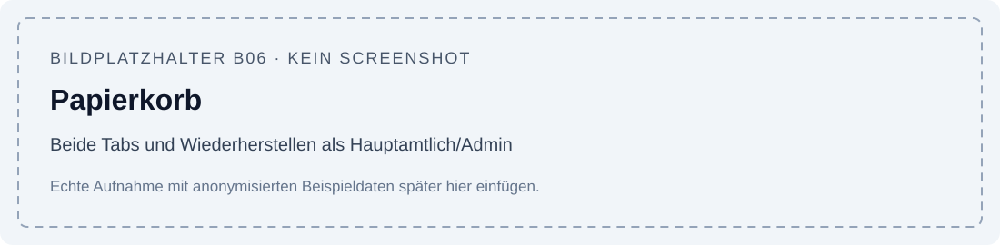
Hier wird später eine echte App-Aufnahme ergänzt. Die Schritte sind vollständig im Text beschrieben.
Helfern wird der Papierkorb im normalen Menü nicht angeboten. Wende dich bei einem versehentlich verschobenen Eintrag an Hauptamtliche oder die Verwaltung. Eine endgültige Löschfunktion für Nutzer ist im beschriebenen Stand nicht eingerichtet.
Zurück zum Überblick ↑9. Statistik verstehen#
9.1 Unterkunft und Zeitraum auswählen
- Öffne Menü → Statistik.
- Prüfe den angezeigten Zeitraum und wähle bei Bedarf Zeitraum ändern.
- Lass beide Datumsfelder leer, wenn du den Zeitraum vom 1. Januar des laufenden Jahres bis heute möchtest.
- Für eine eigene Auswertung trage Von und Bis ein; das Bis-Datum darf nicht vor Von liegen. Beide Grenztage zählen mit.
- Admins wählen zusätzlich das gewünschte Team. Hauptamtliche arbeiten mit ihrem aktuell zugeordneten Team.
- Speichere und öffne die gewünschte Unterkunftskarte.
Abbildung zum Arbeitsschritt Bildplatzhalter
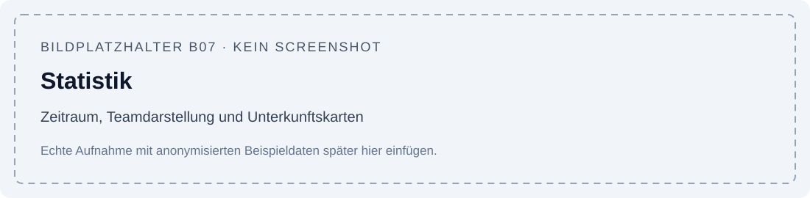
Hier wird später eine echte App-Aufnahme ergänzt. Die Schritte sind vollständig im Text beschrieben.
Die Auswahl ist persönlich für das angemeldete Konto. Bei einem gemeinsam genutzten Konto teilen sich die Personen auch diesen Filter. Fehlt der Filterblock vollständig, muss die Verwaltung die persönliche Filterzeile einrichten. Es gibt keinen bestätigten automatischen Erststart, der eine fehlende Zeile selbst erzeugt.
9.2 Was die Zahlen bedeuten
| Kennzahl | Bedeutung |
|---|---|
| Durchgeführte Einsätze | Abgeschlossene, nicht gelöschte Einsätze ohne Ausfallkennzeichen im Zeitraum |
| Ausgefallene Einsätze | Abgeschlossene, nicht gelöschte Ausfälle im Zeitraum |
| Kinderkontakte | Summe der acht Kinderzahlen aus den durchgeführten Einsätzen |
| Alters-/Geschlechtsgruppen | Kontakte der jeweiligen Gruppe über den Zeitraum |
| Ausgewertete Einsätze | Einzelliste zum Nachvollziehen der Berechnung; Eintrag öffnet das Protokoll |
Offene Vorbereitungen, offene Protokolle und Einträge im Papierkorb zählen nicht mit. Ein durchgeführter Einsatz mit insgesamt 0 Kontakten zählt trotzdem als ein Einsatz. Inaktive Unterkünfte können für historische Auswertungen weiterhin erscheinen.
Es gibt derzeit keine Gesamtkachel über alle Unterkünfte und keine dokumentierte Zeitreihengrafik. Um eine Zahl nachzuvollziehen, öffne die Unterkunft und dann die Liste der ausgewerteten Einsätze.
Zurück zum Überblick ↑10. Excel per Mail anfordern#
- Stelle in der Statistik den richtigen Zeitraum und gegebenenfalls das Team ein.
- Öffne die Unterkunft, für die du die Datei brauchst.
- Wähle Excel per Mail.
- Prüfe Unterkunft und Empfänger im Bestätigungstext und bestätige.
- Warte auf die Mail mit der XLSX-Datei an das angemeldete Konto. Die Erstellung kann einen Moment dauern.
Abbildung zum Arbeitsschritt Bildplatzhalter
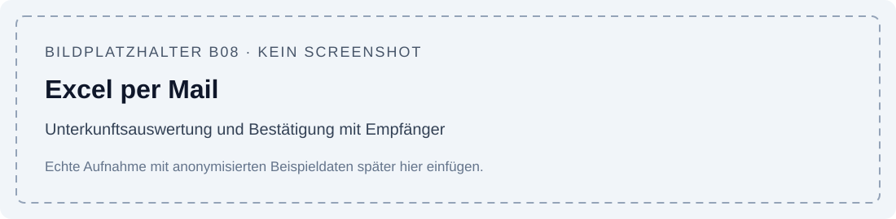
Hier wird später eine echte App-Aufnahme ergänzt. Die Schritte sind vollständig im Text beschrieben.
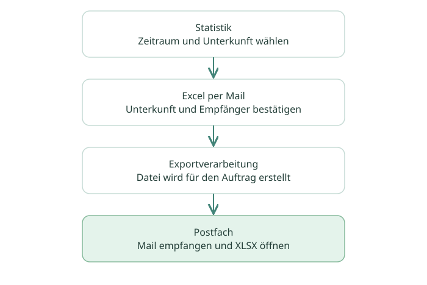
Der Auftrag merkt sich den Zeitraum zum Zeitpunkt der Anforderung. Eine spätere Filteränderung verändert diesen bereits erstellten Auftrag nicht. Die Daten werden während der Verarbeitung aus dem dann vorhandenen Datenbestand gelesen; der Auftrag ist keine eingefrorene Kopie aller Einsatzdaten.
Jeder weitere Klick kann eine weitere Mail anfordern. Wenn eine Mail ausbleibt, prüfe zuerst auch den Spamordner und melde dann Unterkunft, Zeitraum und ungefähre Anforderungszeit der Verwaltung. Es gibt keine zusätzliche Exporthistorie in der Oberfläche.
Die Datei lesen
Links stehen Kategorien, daneben je eine Spalte pro durchgeführtem Einsatz. Rechts folgen Kontakte und Durchschnitt. Oben stehen Unterkunft, Zeitraum und die Anzahl durchgeführter Einsätze nach Einsatzart sowie die Ausfallanzahl.
Der Durchschnitt wird auf ganze Zahlen gerundet. Für die allgemeinen Summen zählt jeder durchgeführte Einsatz einschließlich Einsätzen mit 0 Kontakten. Die Zeilen Vor Ort, Ausflug und Fest verwenden jeweils nur die Anzahl ihrer eigenen Einsatzart als Nenner. Beispiel: 30 Kontakte bei zwei durchgeführten Einsätzen, davon einer mit 0, ergeben im Gesamtdurchschnitt 15.
Die Datei ist eine Momentaufnahme. Nachträgliche Änderungen am Protokoll erfordern eine neue Auswertung. Die App versendet XLSX; ein gesonderter PDF- oder ODS-Export ist nicht eingerichtet.
Zurück zum Überblick ↑11. Probleme lösen#
| Beobachtung | Prüfen und handeln |
|---|---|
| Anmeldung scheitert oder kein Team sichtbar | Richtiges Google-Konto? Verwaltung prüft App-Freigabe, Teamzuordnung und Nutzbarkeit des Kontos. |
| Heute planen zeigt keine Karte | Synchronisieren. Verwaltung prüft aktiven Tagesplan beziehungsweise Ersatzzeile und Teamzugang. |
| Unterkunft nicht auswählbar | Gehört sie zum Team und ist sie für neue Eingaben aktiv? Verwaltung ansprechen. |
| Protokoll lässt sich nicht abschließen | Liste „Für den Abschluss fehlt noch“ abarbeiten; insbesondere Personal, acht Zahlen und Zeitreihenfolge prüfen. Als offen zwischenspeichern. |
| Ausfall lässt sich nicht zurücknehmen | Ausfallkennzeichen zurücknehmen und Status offen wählen. |
| Eintrag verschwunden | Richtigen Tab prüfen: offen, Protokolle, Nachverfolgung Alle oder Papierkorb. Nicht sofort neu anlegen. |
| Nachverfolgung hat keinen Zurück-Button | Ohne Einsatzbezug erstellt oder Ursprung nicht verfügbar. Hinweis im Eintrag beachten. |
| Statistik leer oder ohne Filter | Verwaltung prüft persönliche Filterzeile. Leere Datumseingaben allein sind normal und bedeuten laufendes Jahr. |
| Statistikzahl unerwartet | Zeitraum, Unterkunft, Team, Abschlussstatus und Ausfall/Papierkorb prüfen; ausgewertete Protokolle öffnen. |
| Statistik oder Papierkorb fehlt im Menü | Bei Helfern so vorgesehen. Bei anderer erwarteter Rolle Verwaltung kontaktieren. |
| Excel-Mail fehlt | Postfach/Spam und Anforderungszeit prüfen; nicht mehrfach unkontrolliert anfordern. Verwaltung prüft Auftrag und Automation. |
| Änderungen eines Kollegen fehlen | Synchronisieren und absprechen, wer denselben Eintrag bearbeitet. |
12. Begriffe und Hilfe#
| Begriff | Bedeutung |
|---|---|
| Vorbereitung | Erste Phase eines Einsatzes mit Planung und Basisangaben |
| Protokoll | Dokumentation desselben Einsatzes nach Durchführung oder Ausfall |
| Offen | Gespeichert, aber noch nicht abgeschlossen |
| Abgeschlossen | Abschlussprüfung erfüllt und Abschluss gespeichert; bei vollständigem Ausfall automatisch |
| Nachverfolgung | Eigenständiges Thema mit Status und optionalem Ursprungseinsatz |
| Kinderkontakt | Gezählt pro Einsatz; keine über den Zeitraum eindeutig identifizierte Person |
| Synchronisieren | Änderungen zwischen App und gespeicherten Daten abgleichen |
| Papierkorb | Als gelöscht markierte Einträge, die berechtigt wiederhergestellt werden können |
Für Hilfe melde der zuständigen Verwaltung: angemeldetes Konto, betroffener Bereich, Datum/Unterkunft, erwartetes Ergebnis und tatsächlich angezeigte Meldung. Gib keine Passwörter weiter. Ein Screenshot mit anonymisierten Beispieldaten erleichtert die Zuordnung.
Zurück zum Überblick ↑